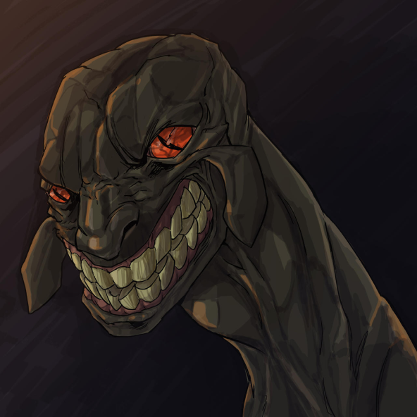

son dos de los personajes más importantes de todo Dark Souls, pudiendo guiar al no-muerto elegido por uno u otro camino dependiendo de sus intereses.
Inicialmente eran dos dragones imperfectos, considerados como indignos entre los dragones puros, hasta el estallido de la guerra entre los dragones y las serpientes, lo que obligó al exilio de Frampt y Kaathe que, pacientes, esperarían su momento para poder actuar. Frampt actuaría como consejera de Gwyn para poder vencer en su batalla contra los dragones, al igual que hizo Seath.

Cuando la Primera Llama empieza a extinguirse, Gwyn y Frampt llegan a un acuerdo para que la Serpiente Primigenia busque a No Muerto elegido con el fin de que sustituya al Señor Ceniza y avive de nuevo la llama, ocupando así su lugar. Kaathe, por su parte, no seguía los mismos planes, ya que su misión consistió en acabar con Gwyn y por fin a la era de los Dioses. De hecho, es ella quien provoca que Artorias sea finalmente consumido por el Abismo, utilizando su enorme poder para su beneficio.
A partir de ahí, inicia su camino para intentar que el No Muerto elegido deje que la llama se extinga para dar comienzo a una nueva era de oscuridad. No obstante, haga lo que haga el no-muerto elegido, las Serpientes Primigenias acaban siendo las grandes vencedoras, siendo los únicos seres inmortales que perduran.
.jpg)